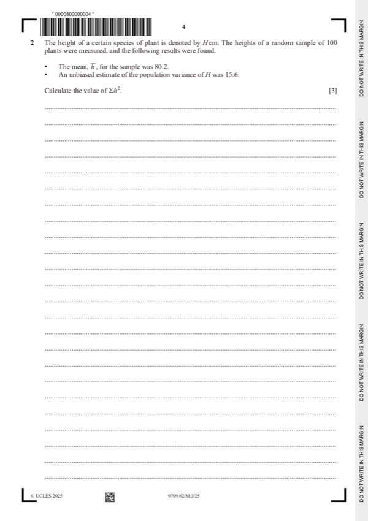
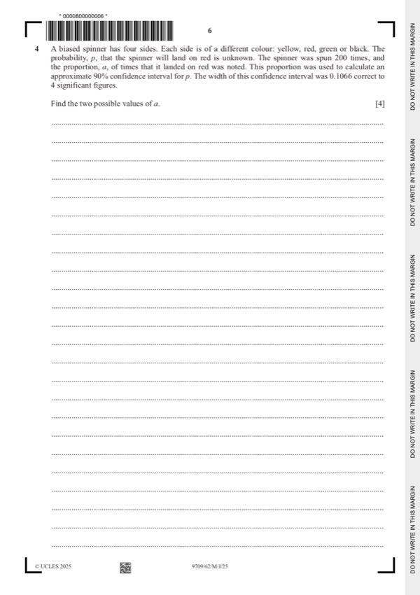
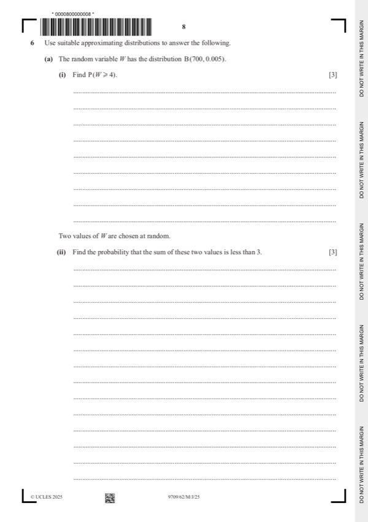
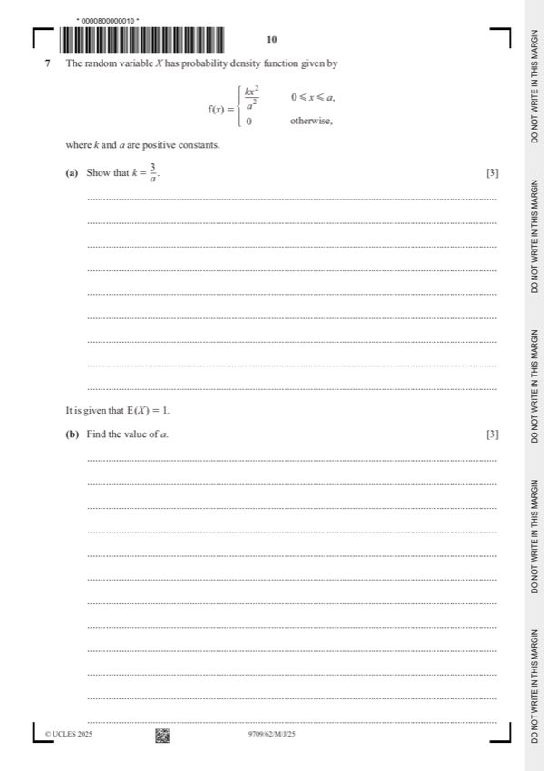
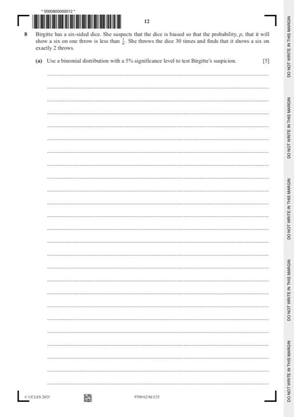

Question 0
Part 0 — solution
Condone missing k.
FT their a.
A1FT Correct expression after correct integration with a
Mark points
- Include the ideas shown in the solution above.
Step-by-step solutions based on the mark scheme (not a mark-scheme dump).
Part 0 — solution
Part 1(a) — solution
Part 1 — solution
Part 1 — solution
Part 1 — solution
Part 1 — solution
Part 1 — solution
Part 1 — solution

Part 2 — solution
Part 2 — solution
Answer: 200 · 200
Part 2 — solution
Part 2 — solution
Part 2 — solution
Part 3(a) — solution
Part 3 — solution
Answer: 200
Part 3 — solution
Part 3 — solution
Part 3 — solution
Answer: a3 0
Part 3 — solution
Answer: a
Part 3 — solution

Part 4 — solution
Part 4 — solution
Part 5 — solution
Part 5 — solution

Part 6(a)(i) — solution
Part 6(a)(ii) — solution
Part 6 — solution
Answer: 6
Part 6 — solution
Part 6 — solution
Part 6 — solution
Answer: 6 6

Part 7(a) — solution
Answer: a2 0
Part 7(c) — solution

Part 8(a) — solution
Part 8(b) — solution
Part 10 — solution
Part 12 — solution
Part 27 — solution
Answer: 3
Part 64 — solution
Part 64 — solution
Part 99 — solution